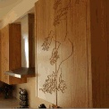
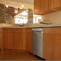
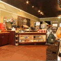
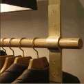

Inspired custom woodwork, millwork, and furniture with a special interest in sustainable design and environmentally sensitive construction.
Tony Osiol.
The “os” in Polosko. The better half of this operation, really. A consummate
joker, Tony happens to be consistently serious about one thing- his work.
Tony brings 15 years of fine arts and woodworking experience to Polosko.
Graduating from VCU with a painting and printmaking degree, he trekked up
north to Providence where he found himself working in one of the most creative
communities for one of the area’s most talented cabinet makers. After a couple
of years, a relocation back to Richmond and several more years of employment
for various wood shops in the River City, Tony teamed up with Jamie- both
quitting their full-time jobs at the beginning of the biggest recession since,
well, the Great Depression (much to the alarm of their wives), and formed
Polosko Custom Woodworks. What better time to start your own business?
Over the years, Tony has developed an amazing eye for detail and an expectation for perfection in his work. His background in painting and printmaking compliments his hands-on woodworking skills which results in beautiful, inspired products. He gets an A+ for his customer service skills- he’s a contractor that will actually call you back, and will bend over backwards to get your job completed on-time.
When Tony’s not slaving at the shop, he’s working on riding his vintage motorcycle, getting massages from his wife, or squeezing his cats. Not too hard. They actually like it. Really.
Over the years, Tony has developed an amazing eye for detail and an expectation for perfection in his work. His background in painting and printmaking compliments his hands-on woodworking skills which results in beautiful, inspired products. He gets an A+ for his customer service skills- he’s a contractor that will actually call you back, and will bend over backwards to get your job completed on-time.
When Tony’s not slaving at the shop, he’s working on riding his vintage motorcycle, getting massages from his wife, or squeezing his cats. Not too hard. They actually like it. Really.
Jamie Polend.
The “pol” in Polosko - the beauty and the brains of this operation. While
advocating a relaxed and fun work environment, Jamie takes great pride
and enthusiasm in his work at Polosko. Jamie brings with him 11 years of
woodworking and design experience.
Jamie immediately took to wood and metal working while at college, often spending most of his money on materials and tools to make the most of his designs. While there, Jamie received the Peachtree award for woodworking, and was featured in Richmond’s Style magazine as an up-and-coming furniture maker. Graduating from VCU with a BFA specializing in furniture design, he immediately found himself at a local cabinet shop.
Jamie has always enjoyed the satisfaction of making furniture, but realized people could have the quality and aesthetic of fine furniture in cabinetry… After meeting Tony, they both decided they should combine their years of knowledge and creative talents to work for themselves. So with the promise to their wives that they knew what they were doing, they quit their full time jobs, started Polosko and have never looked back.
The time Jamie doesn’t spend at the shop, he enjoys watching movies with his wife, working on their house, playing tennis, and taking his dog to the park.
Jamie immediately took to wood and metal working while at college, often spending most of his money on materials and tools to make the most of his designs. While there, Jamie received the Peachtree award for woodworking, and was featured in Richmond’s Style magazine as an up-and-coming furniture maker. Graduating from VCU with a BFA specializing in furniture design, he immediately found himself at a local cabinet shop.
Jamie has always enjoyed the satisfaction of making furniture, but realized people could have the quality and aesthetic of fine furniture in cabinetry… After meeting Tony, they both decided they should combine their years of knowledge and creative talents to work for themselves. So with the promise to their wives that they knew what they were doing, they quit their full time jobs, started Polosko and have never looked back.
The time Jamie doesn’t spend at the shop, he enjoys watching movies with his wife, working on their house, playing tennis, and taking his dog to the park.